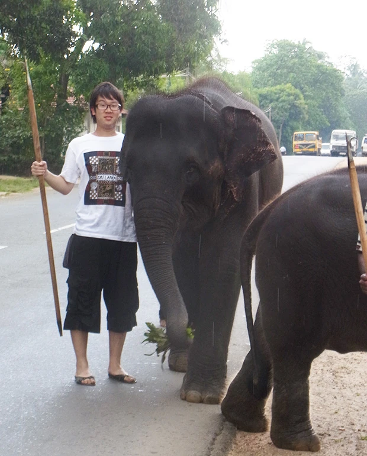
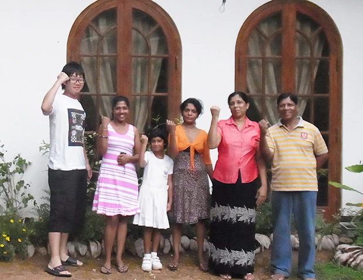
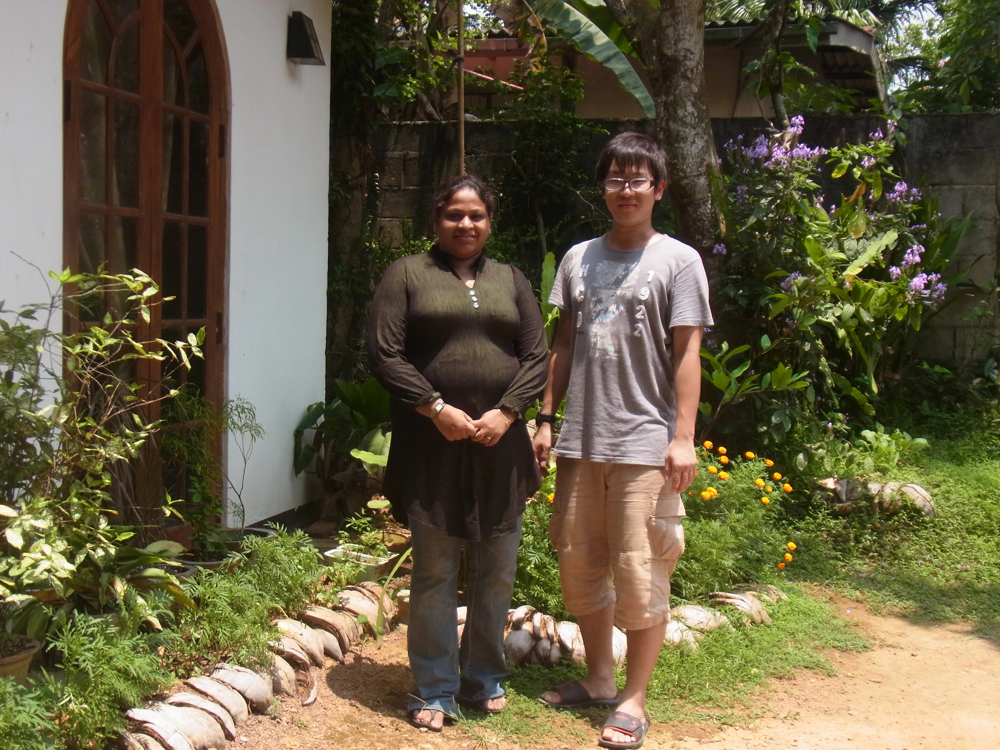

「英語を学びながら、ホームステイが出来る点と、低開発村に視察に行けるので、参加を決めました。
英語レッスンは、未熟な私の英語にも教師の方が懇切丁寧に教えて下さり、これからの英語学習の基礎が築けたと思います。
ホームステイ自体が初めての経験だったので、『赤の他人』の家庭で生活するという感覚に馴れることができるか不安でしたが、始まって数日経つと、案外緊張も解け、さまざまな発見などもあり、有意義な経験をすることができました。
ホストファミリーのみなさんもこちらが恐縮してしまうくらい親切で、また必ず再会したいと思える出会いでした。
トラブルもなく、気持ちよく生活させていただきました。
低開発村視察は そこで暮らしている方にお話を聞いて、
『コロンボにはない自由がある』
『不自由は何一つない』
と仰っていたので、人生の選択肢、価値感の多様性を実感することができ、有意義でした。

スリランカへは今回は二度目の訪問だったので、一度目と比較すると、『優しい』『人懐っこい』という印象は変わらず、前回に比べ、スリランカの暮らしにより寄り添った経験をすることができ、とても意義深いものとなりました。
加えて今回は、人々への宗教への信仰の篤さを実感しました。
仏教ひとつをとっても、日本のそれとは異なり、スリランカの人々の生活に深く浸透しているものでした。
英語だけでなく、文化や宗教、価値感の違いなど、多くの学びや気づきがありました。
スリランカへはぜひ再訪したいと思っています。

今回ほど現地の暮らしに近い生活を体験したのが初めてだったので、その意味では、とても価値ある経験であったと思います。
スリランカの電気事情により、停電が頻繁にあり、ファンなども止まってしまうので、暑さ対策でうちわを持っていけばよかったと思っています(笑）
Beインターナショナルも現地受入団体の対応もとてもご丁寧な対応で、不満な点はありません。
出発前から度々の問い合わせにご丁寧に対応していただいた逢坂様には大変感謝しております。
今後、Beインターナショナルさんの益々のご発展をお祈りしています。
重ねて、このたびは貴重な機会をいただき、本当にありがとうございました。」